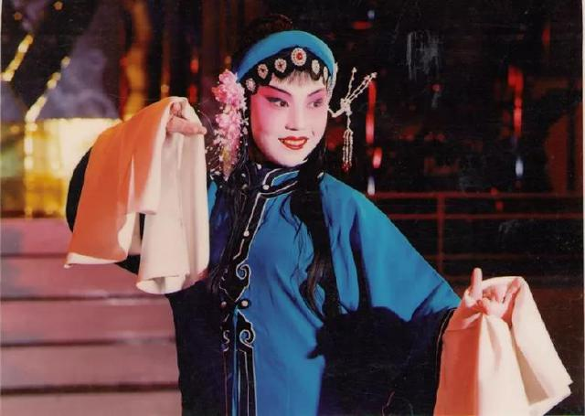

张树萍：初心不改，戏大于天
来源：中国文化报 作者：胡克非 创建时间：2018-07-31 09:44:33
8岁，正是天真烂漫的年纪。那时候，张树萍每天上学都会经过家附近的桂剧团，每当听到屋内传来的唱戏声，看到演员们穿着漂亮的戏服排戏时，张树萍满是羡慕，学戏的种子也在她的心里生根发芽。所以，每次只要有桂剧团、曲艺团、歌舞团招收学员，她都会报名，可惜考了几次都没有如愿。
直到13岁，张树萍在参加广西艺术学校的招生时，遇到了自己的“伯乐”——著名桂剧表演艺术家“小金凤”尹曦。受到尹曦青睐，张树萍顺利过关，开始正式步入梨园学艺。其间，张树萍不仅学到了许多专业知识，也学会了从艺术角度去领略桂剧人物之美。启蒙老师们对桂剧的执着、对艺术的严谨、对事业的坚守，都让张树萍至今难忘。
《失子成疯》剧照
1989年，已是广西桂林市桂剧团演员的张树萍凭借桂剧传统戏《失子成疯》荣获广西首届青年戏曲演员大奖赛一等奖。为了把握和塑造好剧中角色，她多次前去精神病院观察和了解精神病人的生活。获奖后不久，她又迅速投入到参加广西首届剧展的历史剧《瑶妃传奇》的排演中，让《瑶妃传奇》得以在短时间内精彩呈现给观众。后来，《瑶妃传奇》获得文华新剧目奖，张树萍作为该剧女主演也荣获文华表演奖。
继《瑶妃传奇》后，张树萍一连演了《风采壮妹》《未了情》《漓江燕》3部大戏，陆续获得中宣部“五个一工程”奖、中国戏剧梅花奖等荣誉。虽然多次获奖，但是张树萍心中却有了隐隐担忧。桂剧一度面临观众流失、演员断层、优秀作品减少等现实情况，面对桂剧的不景气，张树萍也曾彷徨、迷茫，甚至想过离开，但最终她还是舍不得走。“桂剧就像我身体的一部分，我实在舍不得。毫不夸张地说，戏就是我的情、我的天、我的根本、我的生命。”张树萍说。

《瑶妃传奇》剧照
想要这门传统艺术更好传承下去，就需要改变。2004年，张树萍决定暂别剧团去上海戏剧学院进修导演专业。对于当时正处于事业上升期的她来说，做出这样的决定让很多人不解，其实张树萍的想法很简单——要为桂剧发展作出更大贡献，就不能把自己禁锢在一方小天地里，必须不断往前走。在上海戏剧学院进修期间，张树萍切实感受到了艺术的博大精深，也感受到了什么叫艺无止境。其后，张树萍参 与导演了第一部大戏——桂剧《大儒还乡》。创排中，这部戏前后易稿24次，张树萍带着演员们摸爬滚打， 本着精益求精的态度对作品再三锤炼。最终，该剧获得观众广泛好评，这也给张树萍吃了一颗定心丸，她的努力没有白费。
从演员到导演，再到现在桂林市戏剧创作研究院院长、桂林市非物质文化遗产传承保护中心主任、国家级非物质文化遗产代表性项目代表性传承人，每一个身份都让张树萍感到责任重大。张树萍说：“做演员的时候，我想的是如何演好戏。做导演时，我想的是如何排出更多更好的桂剧作品。如今，我的工作不仅是兴趣，更多的是一种社会责任。处在这个位置，虽然压力很大，但我感到很开心、很荣幸，因为我终于可以为桂剧传承发展、为我们地方文化的传承发展做更多事情了。”
《风采壮妹》剧照
如何让桂剧离观众更近，这是张树萍多年来一直在思考的问题。在桂林市委、市政府“寻找桂林文化的力量，挖掘桂林文化的价值”的号召下，张树萍与其团队精心打造了“桂林有戏”这一精品文化项目。张树萍希望通过这一平台，让桂剧以全新的样貌展现给大家，拉近与观众的距离。
同时，张树萍还不遗余力地助力当地开展“戏曲进校园”活动。在她看来，在剔除那些不符合现代审美元素的同时，桂剧的传承更重要的是坚持本土化，保证其地方特色不变。张树萍意识到，年青一代是桂剧传承的主力军，所以让年青一代认识桂剧、了解桂剧、喜欢桂剧是当务之急。“缺乏年轻观众，那我们就从小培养观众，让学生们懂得看戏，懂得欣赏以桂剧为代表的地方戏曲之美。这是一件很有意义的事情，相信在我们的不断努力下，桂剧一定可以重新焕发光彩，喜欢桂剧的人也会越来越多。”张树萍说。